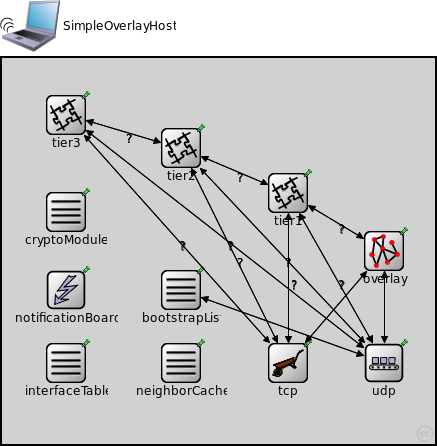
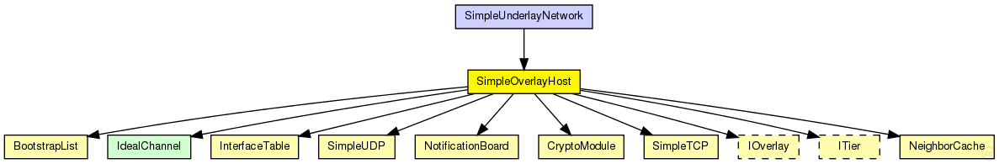
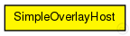

This documentation is released under the Creative Commons license
This documentation is released under the Creative Commons licenseHost in the simple network that participates in the overlay
Author: Stephan Krause, Bernhard Heep, Ingmar Baumgart
The following diagram shows usage relationships between types. Unresolved types are missing from the diagram. Click here to see the full picture.
The following diagram shows inheritance relationships for this type. Unresolved types are missing from the diagram. Click here to see the full picture.
| SimpleUnderlayNetwork (network) |
The SimpleUnderlay ned-file See also: SimpleUnderlayConfigurator |
| Name | Type | Default value | Description |
|---|---|---|---|
| overlayType | string |
overlay protocol compound module to use |
|
| tier1Type | string |
tier 1 application to use |
|
| tier2Type | string |
tier 2 module to use |
|
| tier3Type | string |
tier 3 module to use |
|
| numTiers | int |
number of tiers |
| Name | Value | Description |
|---|---|---|
| display | bgb=433,386;i=device/wifilaptop_l;i2=block/circle_s |
| Name | Direction | Size | Description |
|---|---|---|---|
| overlayNeighborArrowIn [ ] | input |
incoming gate for visualizing overlay neighborship with connection arrows |
|
| overlayNeighborArrowOut [ ] | output |
incoming gate for visualizing overlay neighborship with connection arrows |
| Name | Type | Default value | Description |
|---|---|---|---|
| udp.constantDelay | double |
constant delay between two peers |
|
| udp.useCoordinateBasedDelay | bool |
delay should be calculated from euklidean distance between two peers |
|
| udp.delayFaultType | string |
augment coordinate based delays with a realistic error, according to "Network Coordinates in the Wild", Figure 7 possible values: empty, "live_all", "live_planetlab", "simulation" |
|
| udp.jitter | double |
average amount of jitter in % |
|
| tcp.advertisedWindow | int | 14*this.mss |
in bytes, corresponds with the maximal receiver buffer capacity (Note: normally, NIC queues should be at least this size) |
| tcp.delayedAcksEnabled | bool | false |
delayed ACK algorithm (RFC 1122) enabled/disabled |
| tcp.nagleEnabled | bool | true |
Nagle's algorithm (RFC 896) enabled/disabled |
| tcp.limitedTransmitEnabled | bool | false |
Limited Transmit algorithm (RFC 3042) enabled/disabled (can be used for TCPReno/TCPTahoe/TCPNewReno/TCPNoCongestionControl) |
| tcp.increasedIWEnabled | bool | false |
Increased Initial Window (RFC 3390) enabled/disabled |
| tcp.sackSupport | bool | false |
Selective Acknowledgment (RFC 2018, 2883, 3517) support (header option) (SACK will be enabled for a connection if both endpoints support it) |
| tcp.windowScalingSupport | bool | false |
Window Scale (RFC 1323) support (header option) (WS will be enabled for a connection if both endpoints support it) |
| tcp.timestampSupport | bool | false |
Timestamps (RFC 1323) support (header option) (TS will be enabled for a connection if both endpoints support it) |
| tcp.mss | int | 536 |
Maximum Segment Size (RFC 793) (header option) |
| tcp.tcpAlgorithmClass | string | "TCPReno" |
TCPReno/TCPTahoe/TCPNewReno/TCPNoCongestionControl/DumbTCP |
| tcp.sendQueueClass | string | "TCPVirtualDataSendQueue" |
TCPVirtualDataSendQueue/TCPMsgBasedSendQueue |
| tcp.receiveQueueClass | string | "TCPVirtualDataRcvQueue" |
TCPVirtualDataRcvQueue/TCPMsgBasedRcvQueue |
| tcp.recordStats | bool | true |
recording of seqNum etc. into output vectors enabled/disabled |
| tcp.constantDelay | double |
constant delay between two peers |
|
| tcp.useCoordinateBasedDelay | bool |
delay should be calculated from euklidean distance between two peers |
|
| tcp.delayFaultType | string |
augment coordinate based delays with a realistic error, according to "Network Coordinates in the Wild", Figure 7 possible values: empty, "live_all", "live_planetlab", "simulation" |
|
| tcp.jitter | double |
average amount of jitter in % |
|
| cryptoModule.keyFile | string |
the name of the file containing the public key pair used to sign messages |
|
| neighborCache.rpcUdpTimeout | double |
default timeout value for direct RPCs |
|
| neighborCache.rpcKeyTimeout | double |
default timeout value for routed RPCs |
|
| neighborCache.optimizeTimeouts | bool |
calculate timeouts from measured RTTs and network coordinates |
|
| neighborCache.rpcExponentialBackoff | bool |
if true, doubles the timeout for every retransmission |
|
| neighborCache.debugOutput | bool |
enable debug output |
|
| neighborCache.enableNeighborCache | bool |
use neighbor cache for reducing ping traffic? |
|
| neighborCache.rttExpirationTime | double |
expiration of the validity of the measured rtts |
|
| neighborCache.maxSize | double |
maximum size of the cache |
|
| neighborCache.rttHistory | int | ||
| neighborCache.timeoutAccuracyLimit | double | ||
| neighborCache.defaultQueryType | string | ||
| neighborCache.defaultQueryTypeI | string | ||
| neighborCache.defaultQueryTypeQ | string | ||
| neighborCache.doDiscovery | bool | ||
| neighborCache.ncsType | string | ||
| neighborCache.ncsSendBackOwnCoords | bool | ||
| neighborCache.gnpDimensions | int |
gnp settings |
|
| neighborCache.gnpCoordCalcRuns | int | ||
| neighborCache.gnpLandmarkTimeout | double | ||
| neighborCache.npsMaxLayer | int |
nps settings |
|
| neighborCache.vivaldiShowPosition | bool |
vivaldi settings |
|
| neighborCache.vivaldiErrorConst | double | ||
| neighborCache.vivaldiCoordConst | double | ||
| neighborCache.vivaldiDimConst | double | ||
| neighborCache.vivaldiEnableHeightVector | bool | ||
| neighborCache.svivaldiLossConst | double |
svivaldi settings |
|
| neighborCache.svivaldiLossResetLimit | double | ||
| neighborCache.simpleNcsDelayFaultType | string |
simpleNcs settings |
|
| bootstrapList.rpcUdpTimeout | double |
default timeout value for direct RPCs |
|
| bootstrapList.rpcKeyTimeout | double |
default timeout value for routed RPCs |
|
| bootstrapList.optimizeTimeouts | bool |
calculate timeouts from measured RTTs and network coordinates |
|
| bootstrapList.rpcExponentialBackoff | bool |
if true, doubles the timeout for every retransmission |
|
| bootstrapList.debugOutput | bool |
enable debug output |
|
| bootstrapList.mergeOverlayPartitions | bool |
if true, detect and merge overlay partitions |
|
| bootstrapList.maintainList | bool |
maintain a list of bootstrap candidates and check them periodically |
// // Host in the simple network that participates in the overlay // // @author Stephan Krause, Bernhard Heep, Ingmar Baumgart // module SimpleOverlayHost { parameters: string overlayType; // overlay protocol compound module to use string tier1Type; // tier 1 application to use string tier2Type; // tier 2 module to use string tier3Type; // tier 3 module to use int numTiers; // number of tiers @display("bgb=433,386;i=device/wifilaptop_l;i2=block/circle_s"); gates: input overlayNeighborArrowIn[]; // incoming gate for visualizing overlay neighborship with connection arrows output overlayNeighborArrowOut[]; // incoming gate for visualizing overlay neighborship with connection arrows submodules: tier3: <tier3Type> like ITier { parameters: @display("p=64,57;i=block/segm"); } tier2: <tier2Type> like ITier { parameters: @display("p=179,90;i=block/segm"); } tier1: <tier1Type> like ITier { parameters: @display("p=286,135;i=block/segm"); } overlay: <overlayType> like IOverlay { parameters: @display("p=382,193;i=block/network2"); } udp: SimpleUDP { parameters: @display("p=382,305"); } tcp: SimpleTCP { parameters: @display("p=286,305"); } cryptoModule: CryptoModule { parameters: @display("p=64,154"); } notificationBoard: NotificationBoard { parameters: @display("p=64,232"); } interfaceTable: InterfaceTable { parameters: @display("p=64,305"); } neighborCache: NeighborCache { parameters: @display("p=179,305"); } bootstrapList: BootstrapList { parameters: @display("p=179,232"); } connections allowunconnected: tier1.to_lowerTier --> overlay.appIn if numTiers > 0; tier1.from_lowerTier <-- overlay.appOut if numTiers > 0; tier1.udpOut --> udp.appIn++ if numTiers > 0; udp.appOut++ --> tier1.udpIn if numTiers > 0; tier1.tcpOut --> tcp.appIn++ if numTiers > 0; tcp.appOut++ --> tier1.tcpIn if numTiers > 0; tier2.to_lowerTier --> tier1.from_upperTier if numTiers > 1; tier2.from_lowerTier <-- tier1.to_upperTier if numTiers > 1; tier2.udpOut --> udp.appIn++ if numTiers > 1; udp.appOut++ --> tier2.udpIn if numTiers > 1; tier2.tcpOut --> tcp.appIn++ if numTiers > 1; tcp.appOut++ --> tier2.tcpIn if numTiers > 1; tier3.to_lowerTier --> tier2.from_upperTier if numTiers > 2; tier3.from_lowerTier <-- tier2.to_upperTier if numTiers > 2; tier3.udpOut --> udp.appIn++ if numTiers > 2; udp.appOut++ --> tier3.udpIn if numTiers > 2; tier3.tcpOut --> tcp.appIn++ if numTiers > 2; tcp.appOut++ --> tier3.tcpIn if numTiers > 2; overlay.udpOut --> udp.appIn++; overlay.udpIn <-- udp.appOut++; overlay.tcpOut --> tcp.appIn++; overlay.tcpIn <-- tcp.appOut++; bootstrapList.udpOut --> udp.appIn++; bootstrapList.udpIn <-- udp.appOut++; }
This documentation is released under the Creative Commons license